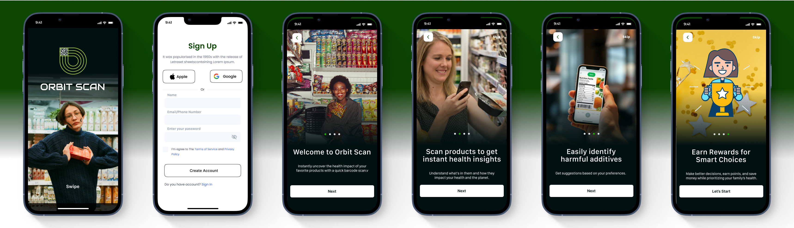
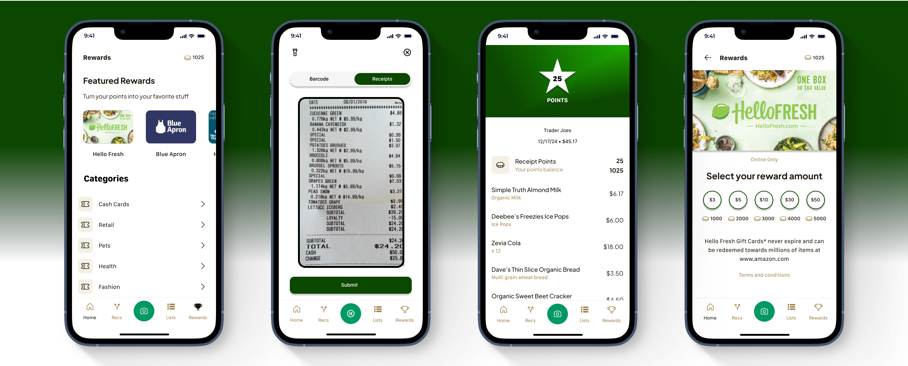

UX Case Study Sequence

A Complete Solution for Smarter, Healthier Product Choices
OrbitScan is a mobile app that helps consumers make informed choices about the products they buy, particularly in the food category. It allows users to scan barcodes of products to receive a detailed analysis of their ingredients, nutritional value, and potential health impacts by simplifying complex information and giving practical health scores and recommendations, Orbit Scan empowers users to make healthier and more informed decisions.
Product labels and ingredient lists are complex and time-consuming to understand, making it difficult to make quick, informed choices while shopping. There's a fundamental gap in nutrition and label literacy, preventing consumers from building long-term knowledge about the foods they consume.

Exploring the 5 W's
Target Audience
Level of Impact
Defining the Problem Precisely
Problem Occurrence Timeline
Context Analysis
Impact Analysis


This research aims to develop an app that addresses a critical gap in consumer knowledge, empowering users to make healthier and more sustainable choices. By providing personalized recommendations, the app will enhance consumer awareness and promote healthier lifestyles, ultimately contributing to public health and environmental sustainability.

Stephanie is a health-conscious mom who cares deeply about the well-being of her family. As a working mom managing a busy household, she's particularly conscious about healthy eating, especially since her youngest child developed food sensitivities.

One evening, Stephanie stumbles upon an article highlighting the dangers of certain additives commonly found in packaged foods. Realizing these ingredients might be in her family's everyday foods, she feels a growing sense of responsibility.But the more she researches, the more overwhelmed she feels.
Stephanie stands in the grocery store aisle and tries to read product labels to find healthier options. She’s feeling overwhelmed. With a shopping cart containing half her list and two kids getting restless, she's trying to decode yet another product label. She's become increasingly aware of the importance of checking ingredients. But every shopping trip turns into a research project
Stephanie’s Grocery Shopping Experience: Challenge
Stephanie’s Pain Points
Stephanie’s Story, Climax:
During lunch, Stephanie shares her struggles with a
colleague.
"I spend so much time reading labels and Googling
ingredients but still feel unsure about my choices," she
says.
Her colleague suggests OrbitScan: "Just scan a barcode,
and it shows health info instantly, plus better
alternatives."
Curious and hopeful, Stephanie downloads the app that
evening, ready to try it on her next grocery trip.
Touchpoints: Downloads the app, opens it, and
familiarizes herself with its features.
Impact:
On her next grocery trip, Stephanie puts OrbitScan to the test.
She picks up the milk tetra pack she usually buys and scans the
barcode.
Within seconds, the app provides:
● Positives: "Good source of calcium."
● Negatives: "Contains additives like Carrageenan."
● Health Score Ratings: 41/100
OrbitScan suggests a better alternative: An organic milk brand
free of harmful additives and within her budget. She swaps the
product without hesitation.
Touchpoints:
● Scans the first product: Milk tetra pack.
● Receives health score and insights on ingredients.
● Replaces the product with a healthier alternative
suggested by OrbitScan.
● Continues shopping and scans several other items
(snacks, pantry staples, etc.).
Stephanie’s Checkout Experience:
Stephanie finalized her purchase with confidence in her
choices.
● She reviews the cart and feels assured about the selections.
● She scans the receipt to earn additional points for healthier
products.
Emotions:
● She is confident in the choices made, feeling good about her
family's health.
Relief: No more second-guessing or stress about product selection.
Happiness: Proud of making healthier, smarter choices.
Touchpoints:
● Scans receipt to earn points.
● Encouraged by the points earned for discounts on eco-friendly
products.
Stephanie’s Story Resolution

Onboarding Screens + Sign Up
Bottom Navigation Features (Home, Recommendation, Scan, Lists & Rewards)

Scanning process & Product Scoring Method

Reedem Rewards from Points Earned
Logo

Typography: AudioWide , Merriweather (Secondary)
Color Palette